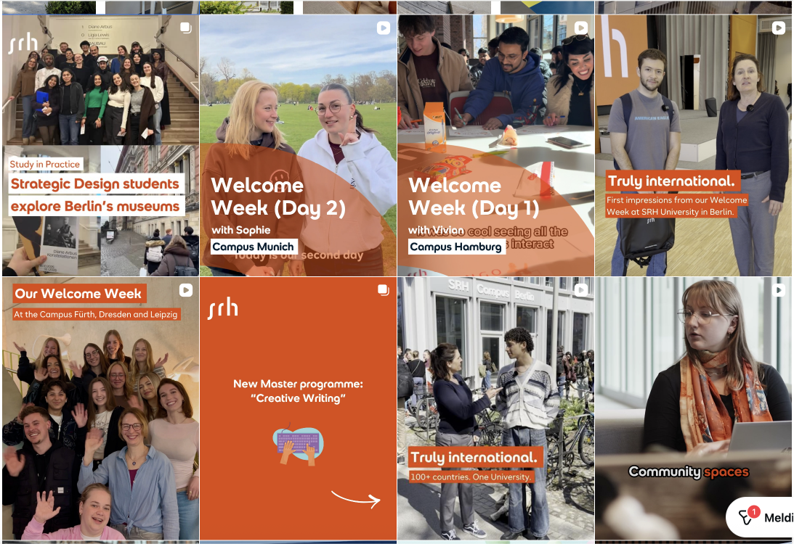
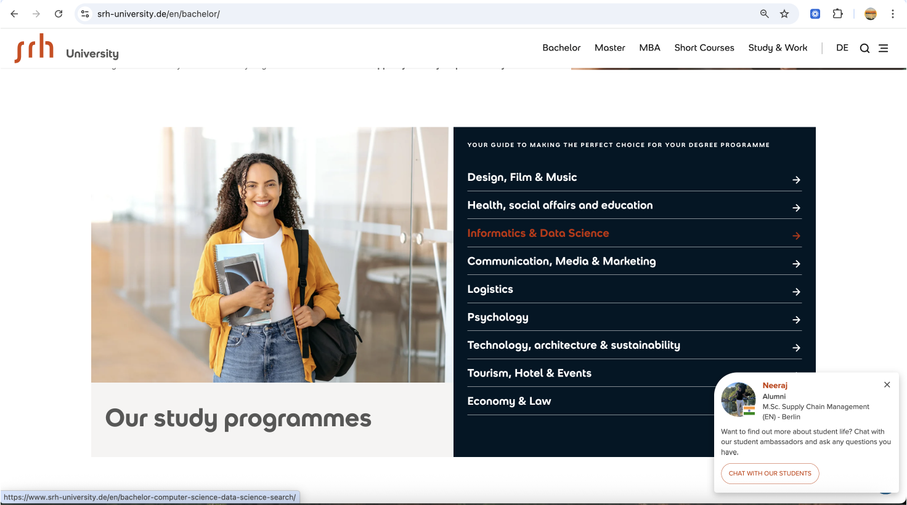
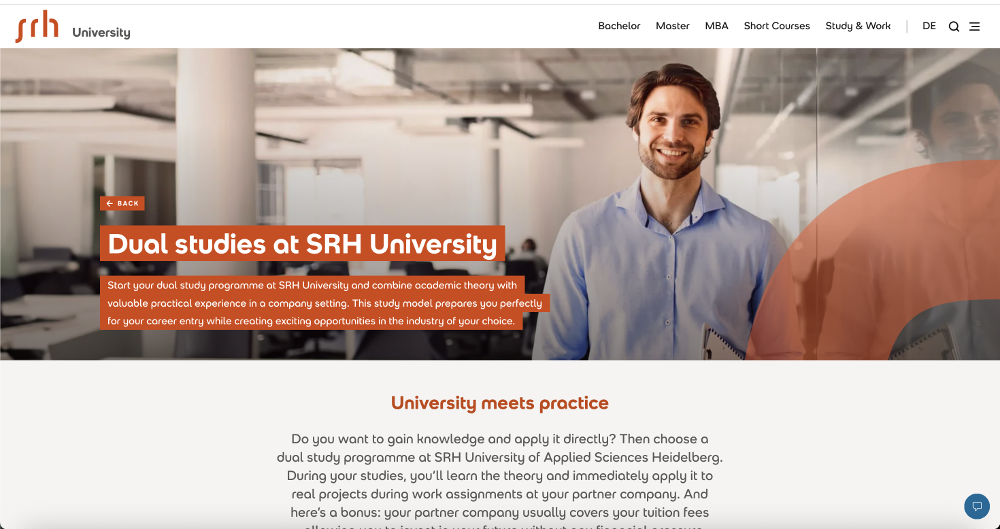
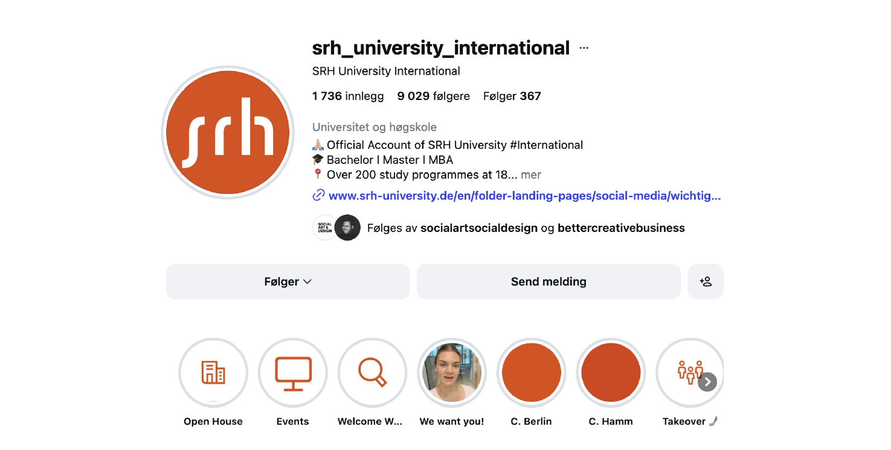
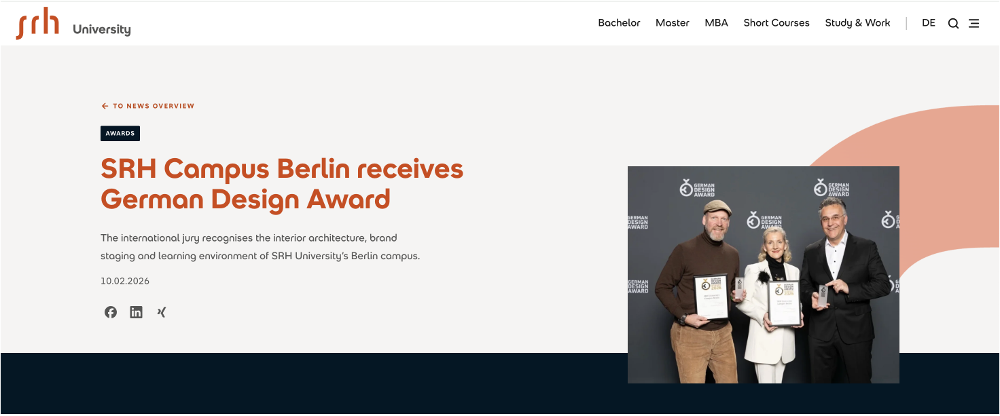
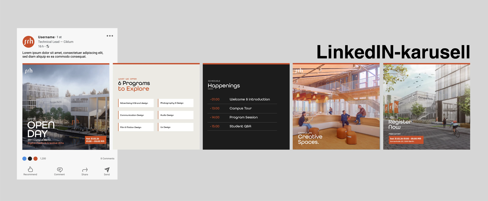
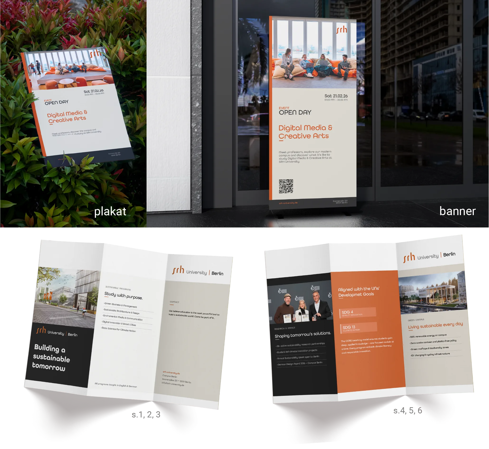
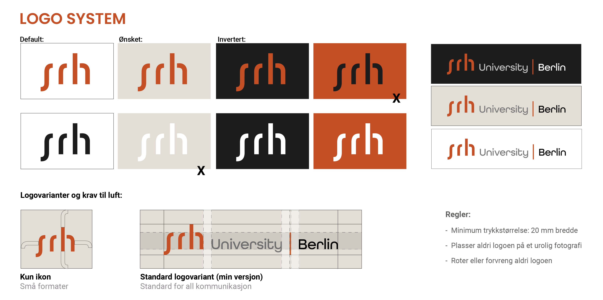

Flerkanal-
publisering
PROSESS
Prosessfaser
Valg av tema
Jeg valgte å redesigne SRH Berlin University of Applied Sciences fordi skolen er relevant for meg både personlig og faglig. Jeg har selv vært interessert i å dra dit på utveksling, noe som gjorde prosjektet mer motiverende å jobbe med.
SRH passet også godt til oppgaven fordi skolen allerede har en tydelig visuell identitet som jeg kunne ta utgangspunkt i. I redesignprosessen kunne vi velge om vi ville legge oss tett på originalen eller gjøre noe helt annerledes. Jeg valgte å holde meg nærmere den opprinnelige identiteten, fordi jeg ønsket å bevare gjenkjenneligheten til SRH og heller bruke oppgaven til å øve på grafisk design, layout, fargebruk, komposisjon og tilpasning til ulike flater.
Jeg tok utgangspunkt i Open Day ved SRH Campus Berlin, fordi det ga prosjektet en realistisk ramme. Oppgaven ga meg mulighet til å utforske hvordan én visuell retning kan brukes på flere ulike trykte og digitale flater, samtidig som jeg fikk utviklet meg som førsteårsstudent på bachelor i grafisk design.

Noen få screenshots av det originale uttrykket:




Iterasjon
I starten av prosessen tok jeg utgangspunkt i et konsept der Digital Media & Creative Arts fungerte som et nytt, tverrfaglig studieområde ved SRH. Dette var ikke et eksisterende studie, men en idé jeg brukte for å skape en tydelig ramme rundt Open Day-prosjektet. På denne måten fikk jeg et konkret innhold å jobbe med, samtidig som konseptet passet til SRH som en internasjonal og kreativ utdanningsinstitusjon.
Visuelt forsøkte jeg først å legge meg ganske tett på SRHs originale uttrykk. Jeg videreførte den oransje signaturfargen, men brukte også mer beige/kremfarge enn det som dominerer i originalprofilen. Tanken var at beige skulle gi uttrykket et varmere og mer sammenhengende preg, samtidig som det fortsatt skulle føles profesjonelt og nært SRHs identitet.
Jeg brukte også fonten All Round Gothic som eneste tekstfont på alle flatene. Grunnen til dette var at jeg ikke hadde tilgang til fonten SRH originalt bruker, og derfor valgte jeg en font som kunne ligne på deres runde og moderne typografiske uttrykk. Etter hvert i prosessen oppdaget jeg likevel at dette ikke fungerte så godt som jeg først hadde tenkt. Siden All Round Gothic er veldig rund i formen, gjorde den uttrykket litt mindre seriøst og mer lekent enn ønsket. Den fungerte heller ikke optimalt på alle flater, spesielt der teksten måtte være tydelig og lett å lese.
Derfor valgte jeg å justere retningen underveis. Jeg gikk bort fra å bruke All Round Gothic som eneste font, og begynte å jobbe mer bevisst med typografisk hierarki, lesbarhet og kontrast mellom ulike tekstnivåer. Dette gjorde at designet etter hvert ble mer egnet for flerkanalspublisering, fordi de ulike flatene stilte forskjellige krav til skriftstørrelse, avstand, lesbarhet og visuell tydelighet.
Refleksjon
I den endelige versjonen ønsket jeg at flatene skulle oppleves som en tydelig del av samme visuelle konsept. Derfor valgte jeg å bruke flere av de samme bildene, fargene og grafiske elementene på tvers av flatene. Dette gjorde uttrykket mer gjenkjennelig og gjorde det lettere å se at de ulike produktene hørte sammen, selv om de hadde forskjellige formater og funksjoner.
Samtidig lærte jeg at det kan være utfordrende å balansere variasjon og helhet. Dersom flatene blir for ulike, kan konseptet virke utydelig, men dersom de blir for like, kan uttrykket bli litt repetitivt. I mitt prosjekt valgte jeg bevisst å legge mest vekt på helhet og gjenkjennelighet, fordi dette var viktig i en flerkanalspubliseringsoppgave. Jeg ville at mottakeren raskt skulle forstå at plakat, nettside, brosjyre, sosiale medier og andre flater tilhørte samme event.
Gjennom prosessen har jeg også blitt mer bevisst på hvordan små valg påvirker helheten, for eksempel bildebruk, typografi, fargeflater, luft og plassering av elementer. I starten prøvde jeg å legge meg tett på SRHs originale uttrykk, men etter hvert måtte jeg gjøre flere egne valg for at designet skulle fungere bedre på de flatene jeg laget. Dette gjorde at jeg fikk øvd meg på å tilpasse én visuell retning til flere ulike medier, noe som var en viktig del av læringsprosessen som førsteårsstudent i grafisk design.


